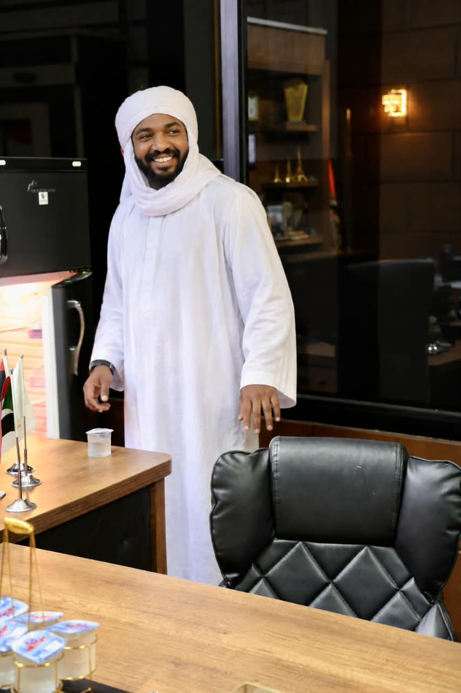
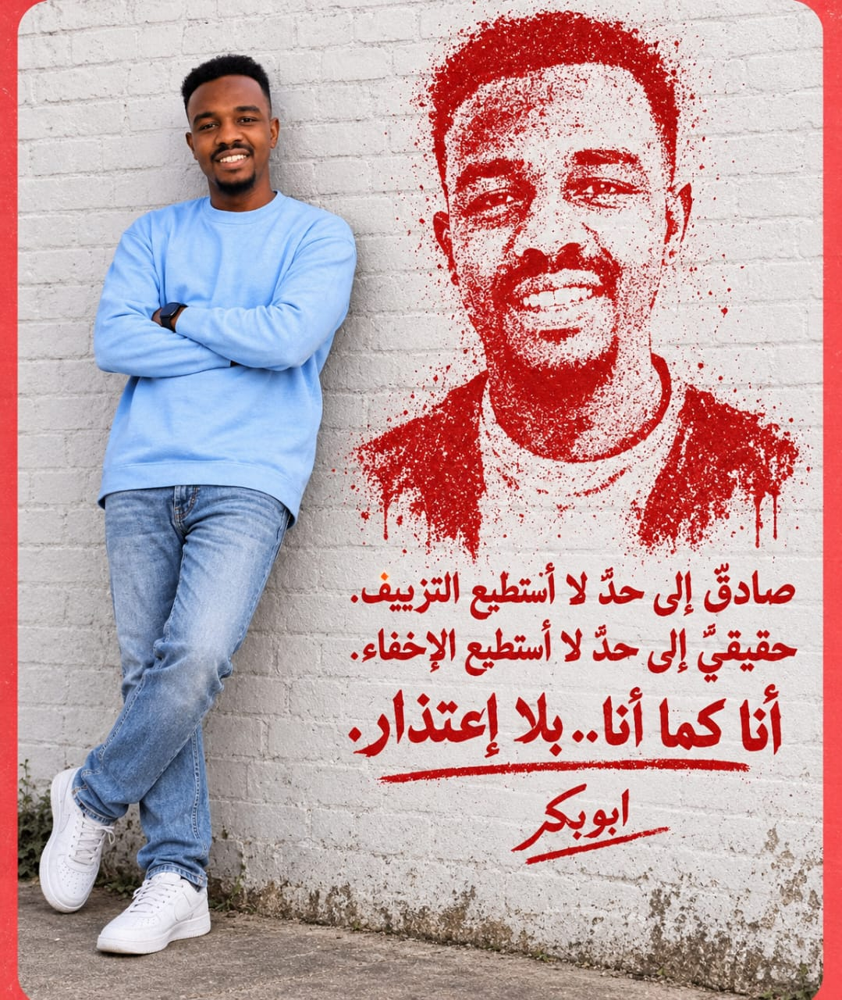

Psychology
Human behaviour, social psychology, psychological awareness and the relationship between individuals and society.
Psychology enthusiast with experience in legal office administration, organizational support and professional development. Interested in human behaviour, community awareness and lifelong learning.

My name is Tareq Hatem, and I have an academic background in psychology alongside practical experience in administrative and legal office support. I value professionalism, clear communication, organization and continuous learning.
My interests bring together human behaviour, workplace organization, community awareness and the development of practical skills. I aim to use my experience and learning to contribute positively to professional teams and community initiatives.
Human behaviour, social psychology, psychological awareness and the relationship between individuals and society.
Office coordination, records management, scheduling, documentation and organizational support.
Administrative support for legal work, document preparation, file organization and client communication.
English language development, computer skills, communication and continuous professional growth.
Studied psychology at Al-Zaiem Al-Azhari University in Sudan.
Diploma-level training in English language and computer studies.
Experience supporting legal office operations, organizing files, preparing documents, coordinating schedules and communicating with clients.
A selection of photographs reflecting my journey, interests and professional aspirations.


For professional enquiries, collaboration or communication, you can reach me through the following channels.